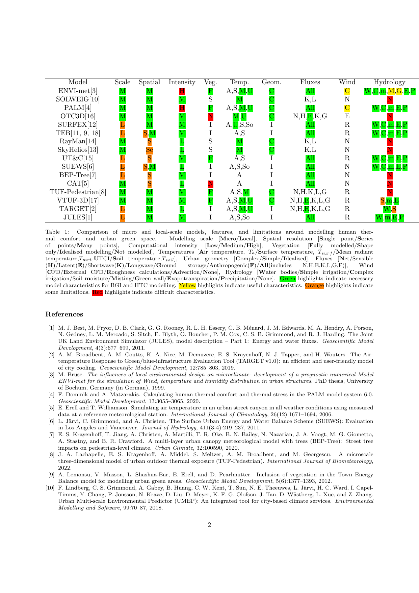

Climate models and source code
Development of the VTUF-3D v1.0 urban micro-climate model to support assessment of urban vegetation influences on human thermal comfort. Source code (FORTRAN) Source code V2 (Java)
VTUF-3D setup files and directions
The Air-temperature Response to Green/blue-infrastructure Evaluation Tool (TARGET v1.0): an efficient and user-friendly model of city cooling. Source code (Java) Documents Source code (Java V2)
Forked Python version for UMEP inclusion
TARGET plugin for QGIS in the UMEP model.
Climate model comparison
